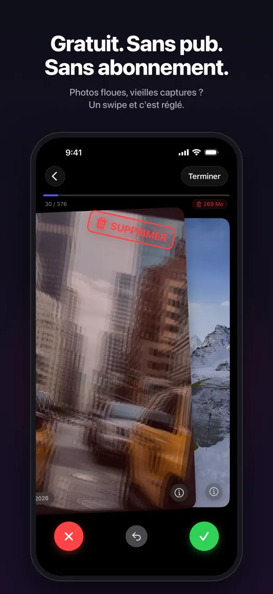
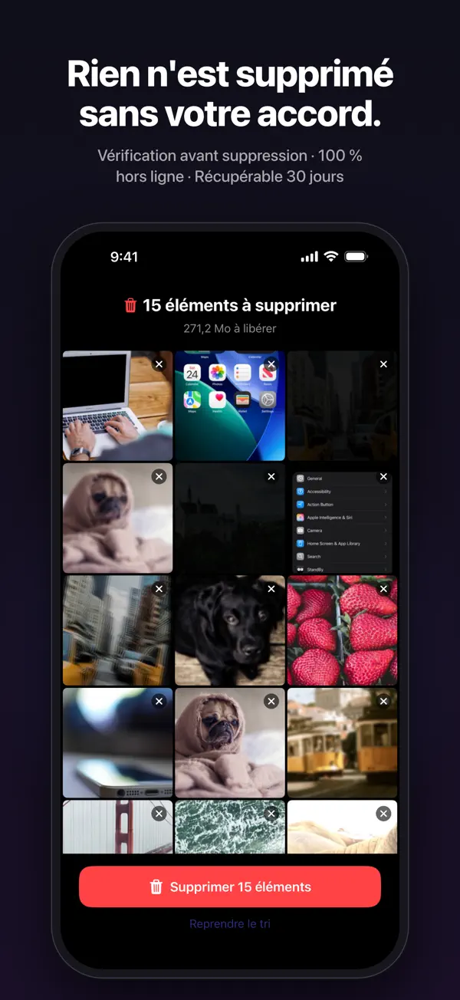

Triez vos photos d'un swipe.
Libérez votre iPhone.
À gauche on supprime, à droite on garde. Gratuit, sans pub, sans abonnement, et vos photos restent sur votre téléphone.
Télécharger dans l'App Store

